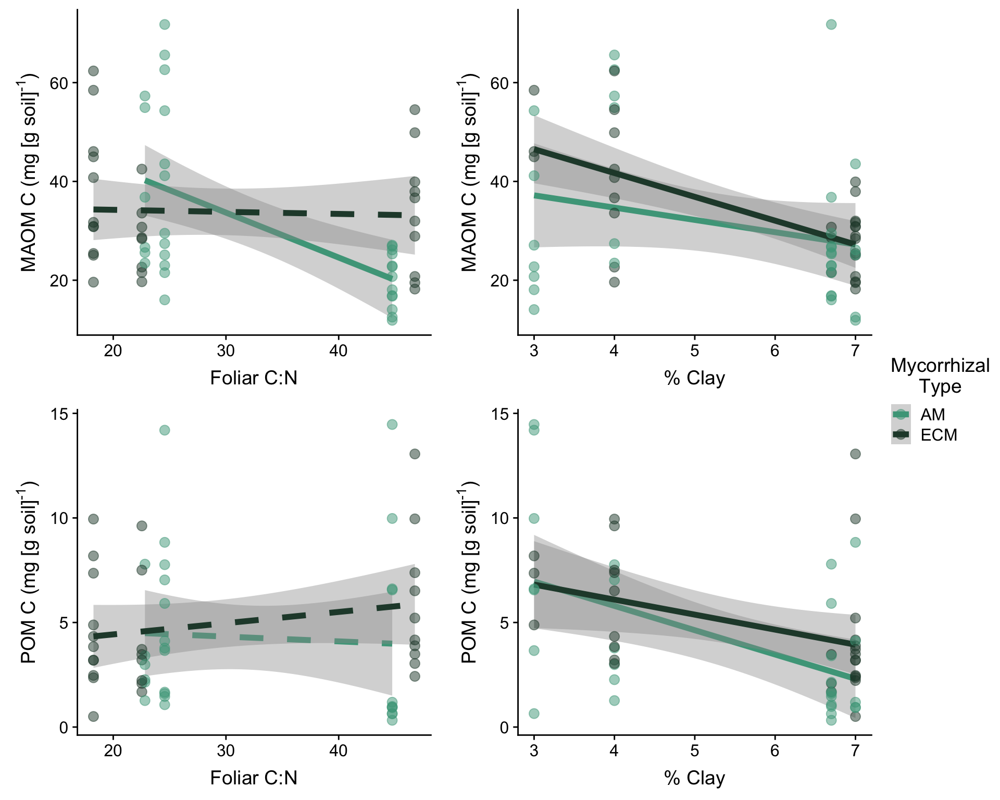
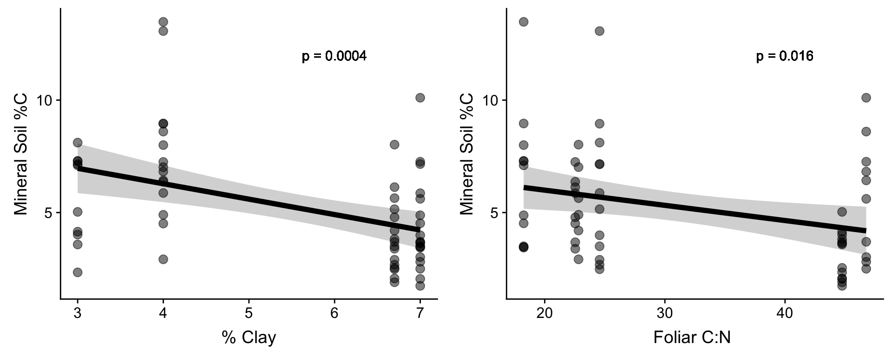

MAOM
What controls the distribution of POM vs MAOM C and N in forest soil?
Possible controls:
1. The quality of the litter inputs to the soil
2. The mycorrhizal association of nearby trees
Other controls that are important to consider:
1. Mineral composition of the soil in each site
2. Other traits of the trees themselves (root turnover rate, above:belowground biomass, something else entirely??)
Tree Species
| Litter Quality | AM | ECM |
|---|---|---|
| High | White Ash | Yellow Birch |
| Medium | Sugar Maple | American Beech |
| Low | Northern White Cedar | Eastern Hemlock |
Figure 1:

Site Map:

What species were at each site?
| Cedar | Maple | Ash | Hemlock | Beech | Birch | |
|---|---|---|---|---|---|---|
| Avery Brook | X | X | ||||
| Hubbard Brook | X | X | X | X | X | |
| Corinth, VT | X | X | X | X | ||
| Long Pond | X | |||||
| Moose Mtn | X | X | X | |||
| Mt Moosilauke | X | X | ||||
| Roy Mountain | X |
How did soil texture vary in these sites?

Univariate Multiple Regression Models:
| Model # | Response Variables | Fixed effects |
|---|---|---|
| 1 | proportion C in MAOM | Mycorrhizal type Foliar C:N Soil%clay |
| 2 | proportion C in POM | Mycorrhizal type Foliar C:N Soil%clay |
| 3 | concentration C in MAOM | Mycorrhizal type Foliar C:N Soil%clay |
| 4 | concentration C in POM | Mycorrhizal type Foliar C:N Soil%clay |
| 5 | MAOM C:N | Mycorrhizal type Foliar C:N Soil%clay |
| 6 | POM C:N | Mycorrhizal type Foliar C:N Soil%clay |
Results:
Proportion of total C in MAOM fraction is lower in ECM plots and increases with soil clay percentage.
##
## Call:
## lm(formula = propC.as.HF ~ avg_CN + Myc.x + clay, data = myc.maom,
## na.action = na.omit)
##
## Residuals:
## Min 1Q Median 3Q Max
## -0.33646 -0.05434 0.01238 0.07325 0.19422
##
## Coefficients:
## Estimate Std. Error t value Pr(>|t|)
## (Intercept) 0.686216 0.062819 10.924 3.5e-15 ***
## avg_CN -0.000342 0.001274 -0.268 0.78944
## Myc.xECM -0.062727 0.029861 -2.101 0.04044 *
## clay 0.025520 0.008943 2.854 0.00615 **
## ---
## Signif. codes: 0 '***' 0.001 '**' 0.01 '*' 0.05 '.' 0.1 ' ' 1
##
## Residual standard error: 0.111 on 53 degrees of freedom
## (3 observations deleted due to missingness)
## Multiple R-squared: 0.1757, Adjusted R-squared: 0.129
## F-statistic: 3.765 on 3 and 53 DF, p-value: 0.01594Proportion of total C in POM is higher under trees with high foliar C:N and decreases with higher soil clay percentage (more is becoming MAOM in those sites?)
##
## Call:
## lm(formula = propC.as.FLF ~ avg_CN + Myc.x + clay, data = myc.maom,
## na.action = na.omit)
##
## Residuals:
## Min 1Q Median 3Q Max
## -0.117350 -0.041110 -0.009359 0.032061 0.198046
##
## Coefficients:
## Estimate Std. Error t value Pr(>|t|)
## (Intercept) 0.1149221 0.0378418 3.037 0.0037 **
## avg_CN 0.0018888 0.0007677 2.460 0.0172 *
## Myc.xECM 0.0082905 0.0179879 0.461 0.6468
## clay -0.0129786 0.0053871 -2.409 0.0195 *
## ---
## Signif. codes: 0 '***' 0.001 '**' 0.01 '*' 0.05 '.' 0.1 ' ' 1
##
## Residual standard error: 0.06686 on 53 degrees of freedom
## (3 observations deleted due to missingness)
## Multiple R-squared: 0.1695, Adjusted R-squared: 0.1225
## F-statistic: 3.607 on 3 and 53 DF, p-value: 0.01911Figure 2:

Concentration of MAOM C lower under high C:N litter, but only in AM plots, and decreases with clay because there’s lower [C] in the higher clay sites overall.
##
## Call:
## lm(formula = HF.mgC.per.g.soil ~ avg_CN * Myc.x + clay, data = myc.maom,
## na.action = na.omit)
##
## Residuals:
## Min 1Q Median 3Q Max
## -22.005 -8.296 -0.389 7.703 37.866
##
## Coefficients:
## Estimate Std. Error t value Pr(>|t|)
## (Intercept) 81.2657 8.7699 9.266 7.95e-13 ***
## avg_CN -0.9226 0.2065 -4.468 3.98e-05 ***
## Myc.xECM -28.6401 8.9681 -3.194 0.002326 **
## clay -3.6857 0.9419 -3.913 0.000253 ***
## avg_CN:Myc.xECM 0.9900 0.2700 3.667 0.000555 ***
## ---
## Signif. codes: 0 '***' 0.001 '**' 0.01 '*' 0.05 '.' 0.1 ' ' 1
##
## Residual standard error: 11.8 on 55 degrees of freedom
## Multiple R-squared: 0.3925, Adjusted R-squared: 0.3484
## F-statistic: 8.885 on 4 and 55 DF, p-value: 1.314e-05Lower POM [C] where there’s more clay because lower [C] overall in those sites.
##
## Call:
## lm(formula = FLF.mgC.per.g.soil ~ avg_CN + Myc.x + clay, data = myc.maom,
## na.action = na.omit)
##
## Residuals:
## Min 1Q Median 3Q Max
## -6.3497 -2.1036 -0.6755 1.0721 8.8346
##
## Coefficients:
## Estimate Std. Error t value Pr(>|t|)
## (Intercept) 8.28782 1.79142 4.626 2.37e-05 ***
## avg_CN 0.03642 0.03620 1.006 0.318814
## Myc.xECM 1.05546 0.84179 1.254 0.215305
## clay -0.97453 0.25326 -3.848 0.000317 ***
## ---
## Signif. codes: 0 '***' 0.001 '**' 0.01 '*' 0.05 '.' 0.1 ' ' 1
##
## Residual standard error: 3.167 on 54 degrees of freedom
## (2 observations deleted due to missingness)
## Multiple R-squared: 0.2271, Adjusted R-squared: 0.1841
## F-statistic: 5.288 on 3 and 54 DF, p-value: 0.002859Concentrations of MAOM and POM C:

To explain the decline in both POM and MAOM C and N concentrations with increasing % clay, we can show there is just a higher concentration of C (bulk mineral soil) where theres less clay. This may be due to chance (few sites) or could be that higher elevation sites are colder (more C) and have less clay because they are on slopes. We also see a significant decline in bulk mineral soil % C with increasing Foliar C:N.
##
## Call:
## lm(formula = value.as.fraction ~ clay, data = myc.maom.minC)
##
## Residuals:
## Min 1Q Median 3Q Max
## -4.6263 -1.5789 -0.3228 1.0127 7.1991
##
## Coefficients:
## Estimate Std. Error t value Pr(>|t|)
## (Intercept) 9.0226 1.0544 8.557 7.19e-12 ***
## clay -0.6854 0.1836 -3.734 0.000432 ***
## ---
## Signif. codes: 0 '***' 0.001 '**' 0.01 '*' 0.05 '.' 0.1 ' ' 1
##
## Residual standard error: 2.337 on 58 degrees of freedom
## Multiple R-squared: 0.1938, Adjusted R-squared: 0.1799
## F-statistic: 13.94 on 1 and 58 DF, p-value: 0.0004324##
## Call:
## lm(formula = value.as.fraction ~ avg_CN, data = myc.maom.minC)
##
## Residuals:
## Min 1Q Median 3Q Max
## -3.2075 -1.8338 -0.5206 1.4228 7.3825
##
## Coefficients:
## Estimate Std. Error t value Pr(>|t|)
## (Intercept) 7.34740 0.90656 8.105 4.09e-11 ***
## avg_CN -0.06757 0.02734 -2.472 0.0164 *
## ---
## Signif. codes: 0 '***' 0.001 '**' 0.01 '*' 0.05 '.' 0.1 ' ' 1
##
## Residual standard error: 2.476 on 58 degrees of freedom
## Multiple R-squared: 0.09529, Adjusted R-squared: 0.0797
## F-statistic: 6.109 on 1 and 58 DF, p-value: 0.0164
MAOM C:N is lower in AM-dominated stands, lower where there’s more clay, and higher where the litter is nasty.
##
## Call:
## lm(formula = HF.cn ~ Myc.x + avg_CN + clay, data = myc.maom.cn,
## na.action = na.omit)
##
## Residuals:
## Min 1Q Median 3Q Max
## -5.8631 -2.8877 -0.2368 2.4764 10.0033
##
## Coefficients:
## Estimate Std. Error t value Pr(>|t|)
## (Intercept) 25.01767 2.06171 12.134 < 2e-16 ***
## Myc.xECM 3.44233 0.96444 3.569 0.000743 ***
## avg_CN 0.15699 0.04134 3.798 0.000361 ***
## clay -2.01541 0.29162 -6.911 4.85e-09 ***
## ---
## Signif. codes: 0 '***' 0.001 '**' 0.01 '*' 0.05 '.' 0.1 ' ' 1
##
## Residual standard error: 3.679 on 56 degrees of freedom
## Multiple R-squared: 0.5314, Adjusted R-squared: 0.5063
## F-statistic: 21.17 on 3 and 56 DF, p-value: 2.708e-09POM C:N tracks foliar C:N (this is likely because it still is basically litter)
##
## Call:
## lm(formula = FLF.cn ~ Myc.x + avg_CN + clay, data = myc.maom.cn,
## na.action = na.omit)
##
## Residuals:
## Min 1Q Median 3Q Max
## -16.3127 -2.5627 0.0034 2.6696 21.0746
##
## Coefficients:
## Estimate Std. Error t value Pr(>|t|)
## (Intercept) 17.65330 3.41143 5.175 3.44e-06 ***
## Myc.xECM 0.50906 1.60303 0.318 0.75204
## avg_CN 0.23859 0.06893 3.461 0.00106 **
## clay 1.37934 0.48228 2.860 0.00601 **
## ---
## Signif. codes: 0 '***' 0.001 '**' 0.01 '*' 0.05 '.' 0.1 ' ' 1
##
## Residual standard error: 6.031 on 54 degrees of freedom
## (2 observations deleted due to missingness)
## Multiple R-squared: 0.2903, Adjusted R-squared: 0.2509
## F-statistic: 7.362 on 3 and 54 DF, p-value: 0.0003182